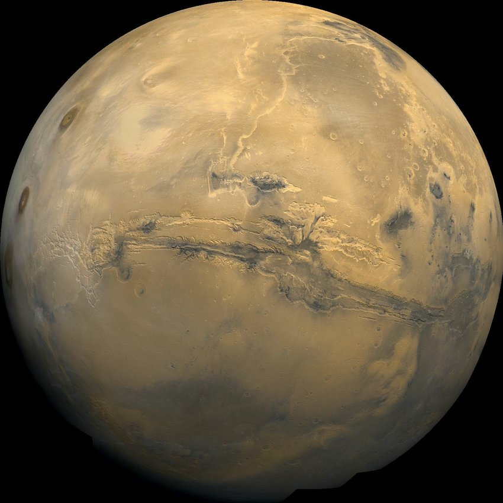
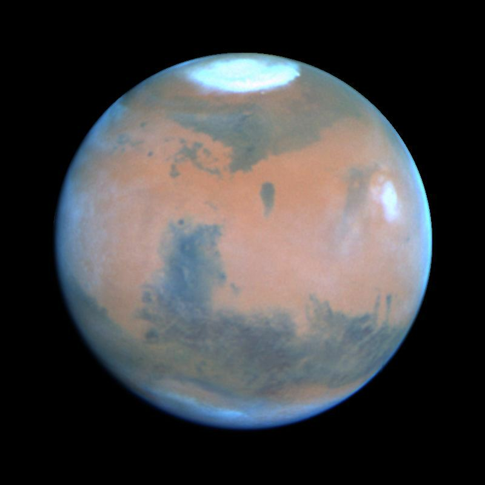
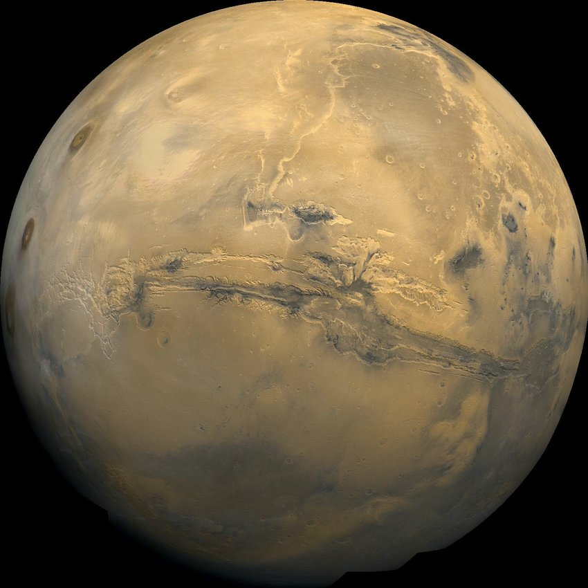
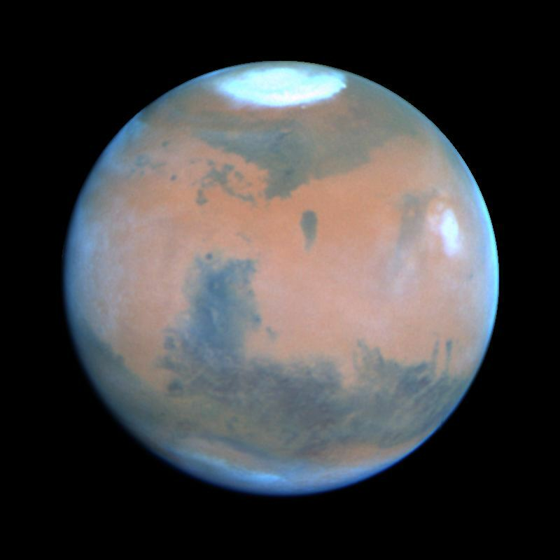
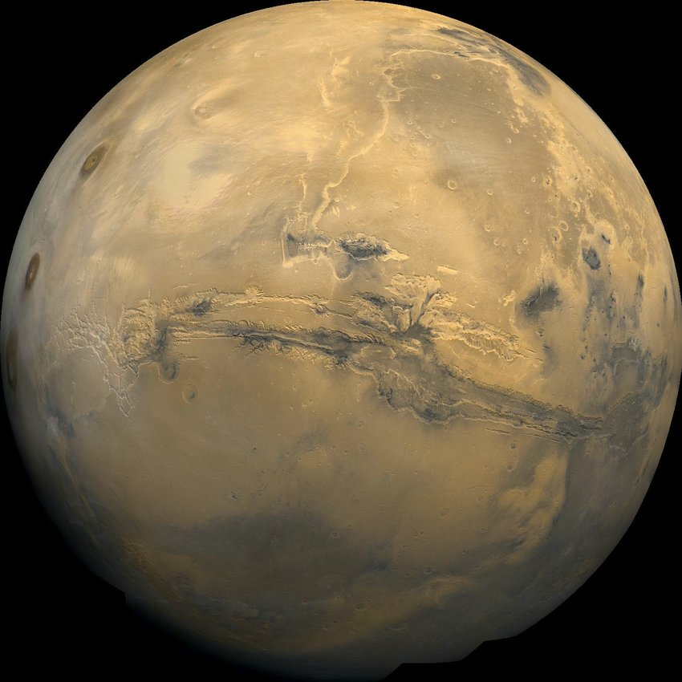
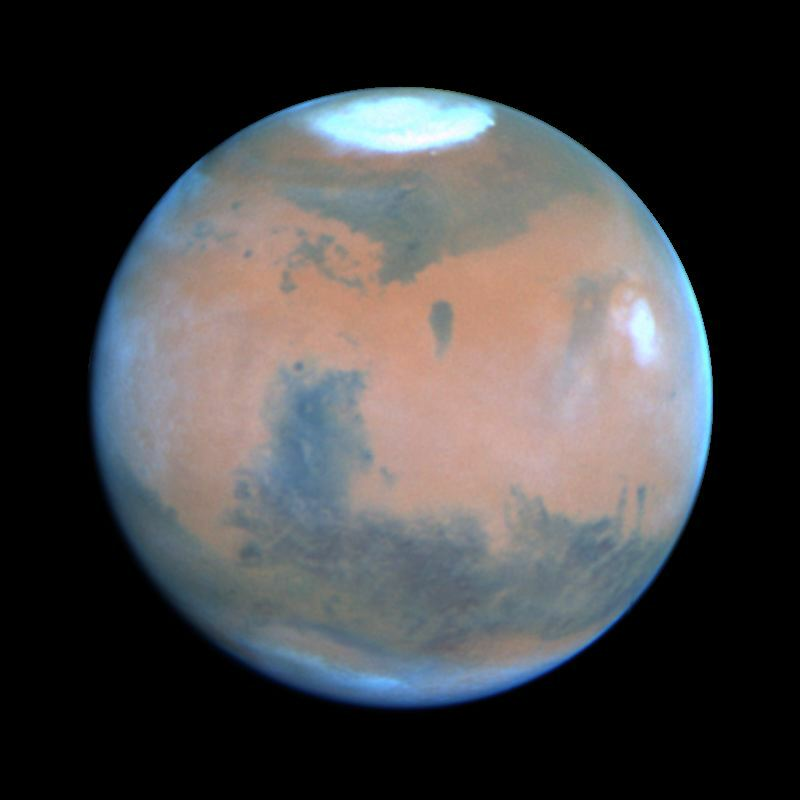

Ratoborni sin Jupiterov
Mars, četvrta planeta u Sunčevom sistemu, dugo je intrigirala ljudsku maštu svojom crvenkasto-prljavom površinom i potencijalnom sposobnošću da podrži život. Poznat i kao "Crvena planeta", Mars je privukao pažnju astronoma, istraživača i naučnika decenijama.
Geološka struktura Marsa otkriva bogatu istoriju planete. Površina Marsa oblikovana je vulkanima, kraterima, planinama i dolinama. Ogromni vulkani poput Olimpa Monsa i kanjoni poput Valles Marineris svedoče o intenzivnoj geološkoj aktivnosti u prošlosti. Istraživanja pokazuju tragove vode na površini, sugerišući da je Mars nekada imao tečnu vodu na površini, što je ključno za potencijalno postojanje života.
| Tip | Opis |
|---|---|
| Vulkani | Ogromni vulkani kao što je Olimp Mons |
| Krateri | Velike udubine na površini nastale udarima meteorita |
| Planine | Planinski lanci poput Tharsis Montes |
| Doline | Duboke udubine koje mogu biti rezultat erozije ili tektonskih procesa |
Atmosfera Marsa je veoma tanka i sastoji se uglavnom od ugljen-dioksida. Nedostatak guste atmosfere znači da je površina izložena štetnom kosmičkom zračenju i ekstremnim temperaturama. Klima na Marsu je ekstremno hladna, sa temperaturama koje padaju do -87°C, ali se mogući lokalni efekti zagrevanja javljaju tokom leta.
Mars je privukao mnoge misije istraživanja iz različitih zemalja. NASA-ini roveri poput Curiosityja i Perseverancea istraživali su površinu, prikupljajući podatke o geologiji, atmosferi i potencijalnoj prisutnosti vode. Evropska svemirska agencija (ESA) takođe je lansirala misije kao što je ExoMars, koja traži znake prošlog ili sadašnjeg života na Marsu.
Mars ostaje ključna tačka interesovanja za buduća istraživanja i čak potencijalnu kolonizaciju. Mnoge privatne kompanije, poput SpaceX-a, ambiciozno planiraju da pošalju ljude na Mars u narednim decenijama. Kolonizacija Marsa otvara vrata novim izazovima i mogućnostima, ali i postavlja važna pitanja o održivosti i dugoročnom preživljavanju na ovoj neprijateljskijoj planeti.

